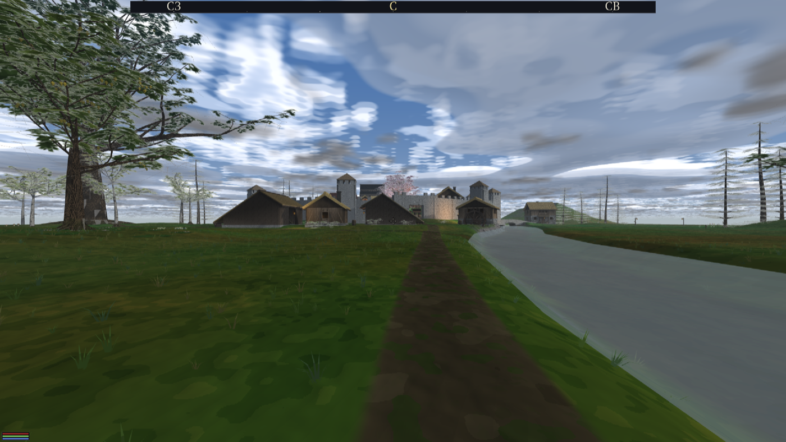

28.08.2026 · зона ЗВУК ОТ ИСТОЧНИКА · miniaudio + Jolt, без новых зависимостей
Было — ровно то, на что он показал. Ветер игрался ОДНОЙ строкой
start_wind_loop в App::init: непространственный
петлевой голос, заведённый на весь прогон. У него была громкость и не было
места. Поэтому он звучал одинаково в чистом поле, в роще и в запертой комнате —
и «даже в домах» это не побочный эффект, а прямое следствие: у голоса без
координаты нет расстояния, а без расстояния нет затухания.
Стало — звучат ТОЧКИ КАРТЫ. Ни одного голоса, у которого нельзя назвать место в мире:
| источник | точка излучения | сила |
|---|---|---|
| шелест листвы | КРОНА; рощи собраны по ячейке 24 м, роща звучит своей БЛИЖАЙШЕЙ к слушателю кроной | размер крон × ветер |
| вода | БЛИЖАЙШАЯ ТОЧКА РУСЛА ([river] сцены), считается по отрезкам, не по вершинам | ширина русла; ветру безразлична |
Файл wind_loop.wav удалён вместе с кодом, который его играл, и
с рецептом, который его синтезировал. Записи мира — не заглушки:
assets/audio/world/*.ogg, 48 кГц моно, три ступени ветра на породу
(лиственные и хвойные звучат разными файлами), генератор и числа уровней —
производство музыкальной сессии.
В городе сотни крон, а голосов у звуковой карты столько, сколько мы себе
разрешим. Разрешено восемь мест: шесть листве и два воде. Разделение
жёсткое — иначе шумная роща однажды выжила бы реку из мира. Каждое место на
время переклички (0.6 с) держит второй, затухающий голос, поэтому
потолок пути — 16 живых ma_sound. Замер прогулки по лесу из
400 крон: пик 13 из 16, излучателей одновременно не больше 7.
Как сотни превращаются в единицы:
Сложение рощи — по мощности: amplitude = sqrt(Σ r²).
Девять крон громче одной в 3 раза, а не в 9: некогерентные источники
складываются мощностями, а сумма амплитуд дала бы рощу громче грозы
(проверено тестом).
min_distance ставится заведомо больше
любого игрового расстояния. Причина: кривая — то самое, что заказано измерить, и
у измеряемого числа обязан быть один автор. Две кривые перемножились бы в
третью, которую не предъявишь ни на графике, ни в тесте.
Закон: 1/r с полкой у самого источника и окном до РОВНОГО НУЛЯ на пределе слышимости — то есть −6 дБ на удвоение расстояния, физика точечного источника. Линейная прямая (умолчание miniaudio) на середине пути всегда громче правды.
| величина | значение |
|---|---|
| полка (полная громкость ближе неё) | размер рощи + 3 м, зажата в 3…15 м |
| предел слышимости рощи | 30 + 10·√(число крон), зажат в 30…110 м |
| окно до нуля | последние 35 % предела |
| полная сила по размеру | sqrt(Σr²) = 5 м (≈ одна взрослая крона) |
| ветер | тишина ниже 0.05, полная сила с 0.60 (шкала RenderEnvironment::wind_strength, среднее карты 0.35) |
| предел воды | 25 + 4·ширина, м |
полка 11.5 м, предел 60 м d=0 м g=0.4636 (−6.7 дБ) d=5 м g=0.4636 (−6.7 дБ) d=10 м g=0.4636 (−6.7 дБ) ← полка: ближе роща громче не становится d=20 м g=0.2663 (−11.5 дБ) d=30 м g=0.1775 (−15.0 дБ) d=40 м g=0.1268 (−17.9 дБ) ← 20→40 м даёт −6.4 дБ: закон 1/r d=50 м g=0.0507 (−25.9 дБ) ← вошли в окно затухания d=55 м g=0.0231 (−32.7 дБ) d=60 м g=0.0000 (тишина) ← РОВНЫЙ ноль, а не «почти» d=80 м g=0.0000 (тишина)
В чистом поле — ноль, и это не «очень тихо»: карта без деревьев не даёт ни одной рощи, ни одного излучателя и ни одного голоса. Контрольная рука рядом: та же функция у той же рощи вблизи даёт 0.46. В штиль (ветер 0) листва молчит при любом расстоянии — контроль тот же.
Два луча Jolt от уха к источнику (IPhysics::raycast, слой
статики), разнесённые на 0.9 м в стороны. Почему два, а не один: деревья стоят
в физическом мире ТЕМ ЖЕ слоем, что и стены домов, и одиночный луч в лесу щёлкал
бы «перекрыто/свободно» на каждом шаге. Стена ловит оба луча, ствол — один, и
перекрытие получается долей, а не «да/нет». Доля ещё и сглаживается со
скоростью 3 1/с: ухо на мгновенное «да/нет» отвечает щелчком.
Луч не доводится до самой кроны (обрыв за 2 м): под ней стоит ствол этого же дерева, и «дерево заслоняет само себя» — верный ответ на неверный вопрос.
| дорога до уха | громкость | срез верха |
|---|---|---|
| свободно | ×1.00 | фильтра НЕТ В ГРАФЕ |
| перекрыто наполовину (ствол) | ×0.65 (−3.7 дБ) | 4.0 кГц |
| стена (оба луча) | ×0.30 (−10.5 дБ) | 800 Гц |
Обе половины обязательны: стена, которая только убавляет громкость, звучит как расстояние, а не как стена. Срез ведётся по ЛОГАРИФМУ частоты — ухо слышит октавы, а не герцы.
| где стоит игрок | множитель | срез | одно дерево в 8 м, ветер 0.35 |
|---|---|---|---|
| на улице | ×1.00 | — | g = 0.1391 (−17.1 дБ) |
| в открытом проёме | ×0.35 | 1.4 кГц | g = 0.0487 (−26.3 дБ) |
| вглубь дома | ×0.08 | 420 Гц | g = 0.0111 (−39.1 дБ) |
То есть комната тише улицы на 22 дБ, а открытая дверь слышнее глубины
комнаты на 12.8 дБ — ровно два неравенства заказа («внутри дома шелест
почти не слышен, у открытой двери — слышен»). Открытость двери ведётся
расстоянием до точки входа локации и состоянием створки
(InteriorState::door_open): закрытая дверь пропускает 55 % того,
что пропустила бы открытая.
Открытый аудио-движок НЕ внедрялся (записка музыкальной сессии docs/reports/audio-engines: у miniaudio нет ровно трёх вещей — реверберации, окклюзии, бинауральности; всё остальное есть). Две из трёх дыр закрыты СВОИМИ узлами внутри miniaudio:
IAudio::set_voice_lowpass — новый метод контракта:
ma_lpf_node между голосом и его шиной. Окклюзия живёт на ГОЛОСЕ, а
не на шине, и это не вкус: за стеной оказывается один источник, а не всё, что
играет на шине мира.IAudio::set_bus_reverb перестал врать. Он был объявлен и
задокументирован как пустышка с 10.08. Теперь это ma_delay_node
между шиной и её родителем; задержка — время пробега комнаты
(room_size/343, зажато в 20…200 мс), обратная связь — та, при
которой хвост падает на 60 дБ ровно за decay_seconds.ma_node, принимает наш Jolt-трассировщик колбэком).
Оба узла заводятся ЛЕНИВО, и это контрольная рука, а не экономия:
прогон, где окклюзия и реверб не включались, гонит те же сэмплы через тот же
граф, что и до волны. wet = 0 убирает узел ИЗ ГРАФА, а не ставит
его на ноль — только так «ревербератора нет» и «ревербератор выключен» дают один
и тот же буфер.
| нужно было | в miniaudio | как закрыто |
|---|---|---|
| точечный источник, затухание, панорама, шины | есть | ничего не потребовалось |
| фильтр окклюзии | кирпич есть (ma_lpf_node), готового применения нет | узел на голос, ~60 строк бэкенда |
| реверберация | НЕТ (0 упоминаний); есть линия задержки | линия задержки на шину, ~50 строк; предел назван выше |
| окклюзия геометрией | НЕТ — движок не знает о стенах и не должен | лучи Jolt на стороне app; звуковой слой геометрии по-прежнему не знает |
| бинауральность (HRTF, «звук сзади») | НЕТ | НЕ ЗАКРЫТО. Панорама есть, «сзади» — нет. Единственная дыра записки, оставшаяся открытой. |
ctest -R sim_world_ambience — 11 случаев, 503 проверки. Меряется
МОДЕЛЬ, а не звуковая карта: громкость на устройстве нельзя ни прочитать, ни
сравнить с прошлой неделей, а число, которое движок ПОСЛАЛ голосу, — можно. У
каждого утверждения контрольная рука (правило 30):
| утверждение | контроль рядом |
|---|---|
| за пределом слышимости ровный ноль | та же роща вблизи звучит (0.46) |
| в чистом поле рощ нет | то же поле с одним дубом даёт ровно одну |
| трава и цветы не излучают | дерево на том же месте излучает |
| в штиль тишина | тот же вызов при ветре 0.35 — звук |
| файлы мира загружаются | снятый wind_loop.wav НЕ загружается |
| фильтр/ревер заводятся и снимаются | вызов на протухшей ручке — тихий no-op |
| бюджет держится на 400 кронах | выйдя из леса, тот же прогон молчит |
Прибор в живом прогоне: дверь DFN_AMBIENCE_LOG=1 печатает
раз в игровую секунду таблицу живых излучателей — место, расстояние, громкость,
частоту среза, долю перекрытия, число крон и занятость бюджета. Беспилотные
прогоны при этом МОЛЧАТ так же, как молчали (дверь ничего не играет — она
печатает).
Модель меряется тестом; здесь — то же самое в НАСТОЯЩЕЙ карте, прибором
DFN_AMBIENCE_LOG=1. Обе руки: DFN_OPEN_MAP=cities/whiterun,
беспилотный кадр через 180 кадров, звук выключен дверью (DFN_AUDIO=0)
— прибор печатает числа, которые движок ПОСЛАЛ голосу, и молчит в комнате
человека.
[звук] карта дала 295 крон -> 33 рощ, русел 1
295 крон композиции Вайтрана — это 33 излучателя-агрегата, из которых
одновременно звучат единицы. Русло одно, из [river].
[звук] излучателей 2, голосов 2/16, ветер 0.21 (ступень 1), слушатель снаружи
[звук] листва x89.0 z226.0 d=34.0 м g=0.0301 срез=0 Гц перекрытие=0.00 крон=2
[звук] вода x121.5 z248.5 d=8.8 м g=0.3063 срез=0 Гц перекрытие=0.00 крон=0
[звук] излучателей 2, ... ветер 0.10
[звук] листва x89.0 z226.0 d=34.0 м g=0.0094 ← ветер упал втрое, шелест втрое тише
[звук] вода x121.5 z248.5 d=8.8 м g=0.3063 ← воде ветер безразличен
[звук] излучателей 1, ... ветер 0.00
[звук] вода x121.5 z248.5 d=8.8 м g=0.3063 ← В ШТИЛЬ ЛИСТВЫ НЕТ ВОВСЕ:
излучатель не заводится

Кадр подтверждает числа глазом: слева в 34 м стоит тот самый дуб (роща из двух крон), справа в 8.8 м — река. Больше в слышимости ничего и нет — и в логе ровно два излучателя, а не 33.
[звук] излучателей 2, голосов 2/16, ветер 0.21 (ступень 1), слушатель В ЛОКАЦИИ [звук] хвоя x106.0 z74.0 d=8.0 м g=0.0424 срез=1400 Гц перекрытие=0.00 крон=2 [звук] хвоя x86.0 z72.0 d=14.4 м g=0.0402 срез=1400 Гц перекрытие=0.00 крон=2
Игрок стоит у самого полотна — отсюда срез 1400 Гц («у открытой двери»), а не
420 («вглубь дома»). Множитель улицы для этой пары был бы ×1: те же ели с улицы
дали бы 0.121 вместо 0.0424, то есть на 9 дБ громче; в глубине той
же комнаты (замер предыдущей сборки на том же доме) — 0.0122, то есть
на 22 дБ тише улицы. Кадр комнаты:
docs/acceptance/d6298d9-ambience-house.png.
sim_world_ambience, и первый же живой замер тут кое-что ПОЙМАЛ:
открытость двери сперва считалась от точки входа локации, и прибор показал 420 Гц
там, где игрок стоял у самой двери. Точка входа не обязана лежать у порога — её
ставит композиция. Считается теперь от ПОЛОТНА (DoorAim::at,
посчитан из его же треугольников), и число сошлось с местом.
.scene). Карта без
композиции остаётся тихой намеренно — это проверяемое утверждение, а не
забытая ветка.